Play and one-click join
Launch any installed version, or join VSMP directly with the server address preconfigured.
WHAT YOU GET
A launcher built around one server. Everything is one click from the Play button.
Launch any installed version, or join VSMP directly with the server address preconfigured.
Live Mojang release and snapshot catalog, plus Fabric and Forge profiles, with automatic installs.
Sign in with Ely.by (including two-factor), Microsoft, or play offline. Multiple accounts are supported.
Pick the memory limit; matching Java runtimes are downloaded and verified for you.
Launch logs, Minecraft output and crash reports in one page, with copy and open-folder buttons.
V-Client checks for new builds on start and offers one-click download of the new installer.
Dress your character with capes, wings and hats. Equip them from the launcher's Cosmetics page, or from the in-game Cosmetics menu (press K) which adds a live preview.
Particle trails that follow you, and emotes such as wave, dance, clap and salute.
Shimmering capes, twinkling stars and spinning halos.
Try anything on a live, rotating preview of your character, then equip it. Your choices are saved.
Free cosmetics for everyone, Premium unlocks granted by the team, and limited-time Event items.
New cosmetics download from the V-Client server, so they appear without reinstalling. Cosmetics are visual only and never affect gameplay. Currently only you can see your own cosmetics.
V-Client detects Minecraft Bedrock and PojavLauncher (for Java Edition), lets you pick your preferred edition, and opens it. Bedrock players get one-tap VSMP and a server list.
Online state, player count and ping for both Java and Bedrock.
The same feed as the Windows launcher and this website.
Sign in with your V-Client account and link your Minecraft and Ely.by names.
New APKs are downloaded and verified with SHA-256 before Android’s installer opens.
The V-Client night theme, built with Jetpack Compose.
A LOOK INSIDE
Screens rendered from the real app code. Detected versions and the saved server are sample data to show each state.
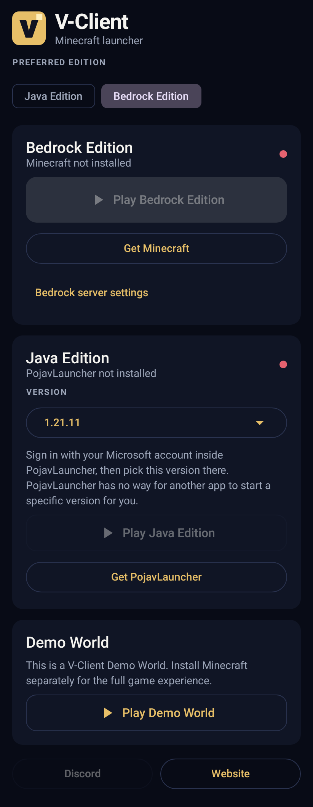
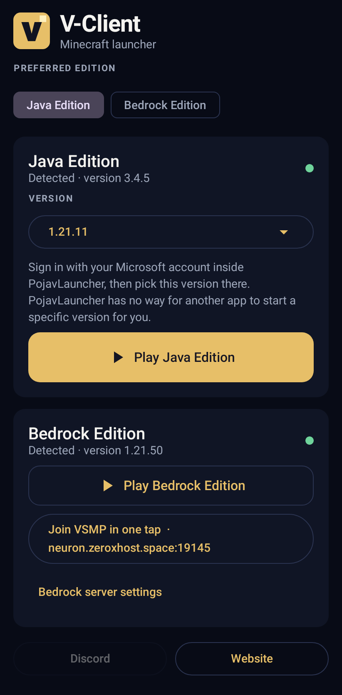
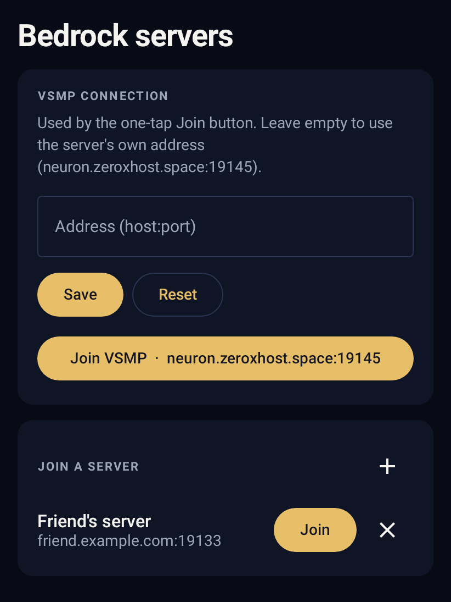
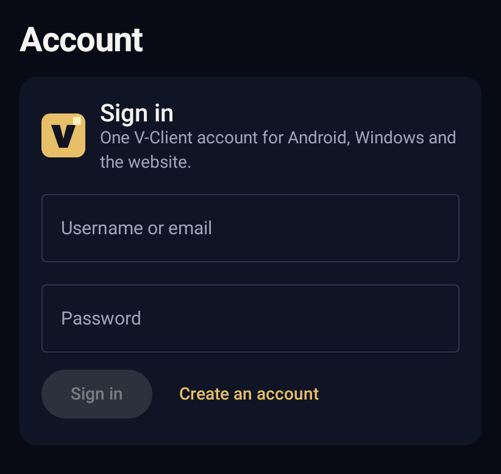
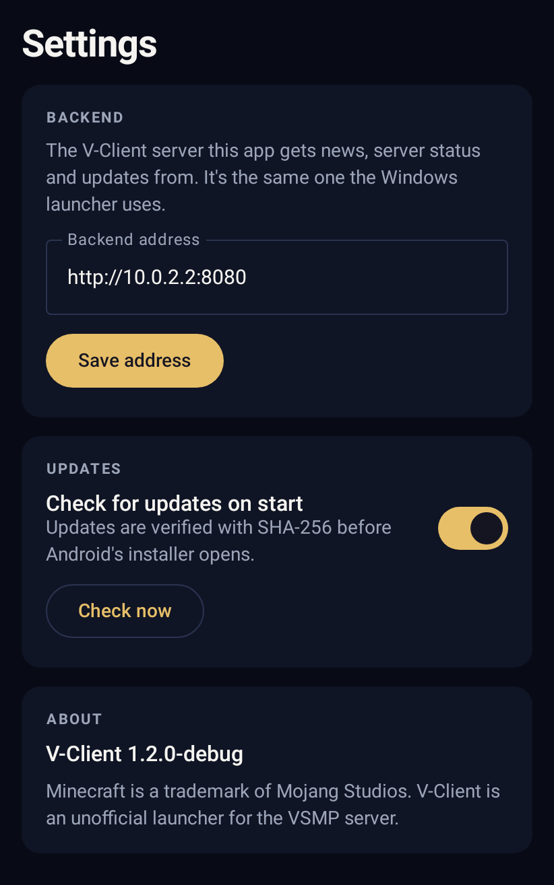
FREE · OFFLINE · ORIGINAL
A voxel sandbox built into the V-Client Android app, made entirely from original V-Client code and artwork. Explore a 512 × 512 block island (32 × 32 chunks) with an Oak Forest, a Cherry Blossom grove, hills, mountains, water and a village. You start with nothing: break blocks with the right tool, collect materials, and craft planks, sticks, a Crafting Table and wooden, stone and iron tools to dig for coal, iron and gold. It works without internet and saves on your phone.
This is a V-Client Demo World. Install Minecraft separately for the full game experience. It contains no Minecraft code, textures, sounds or worlds.
Want the real thing? The app also finds Mojang's official free Minecraft Trial next to the Demo World: it opens it if installed, or takes you to the official download. The trial is limited by Mojang (about 100 minutes of Survival, no online servers).
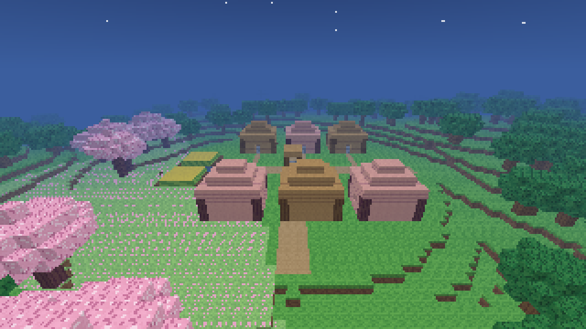
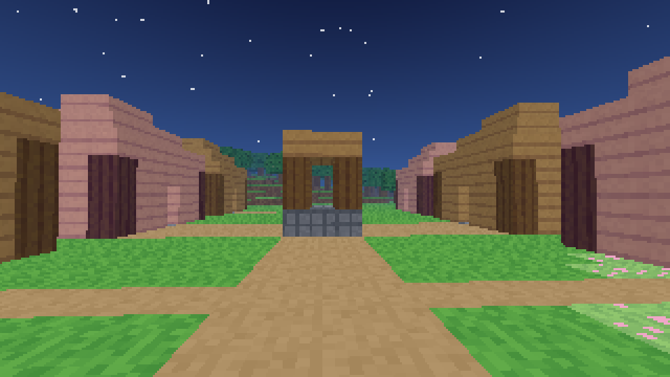
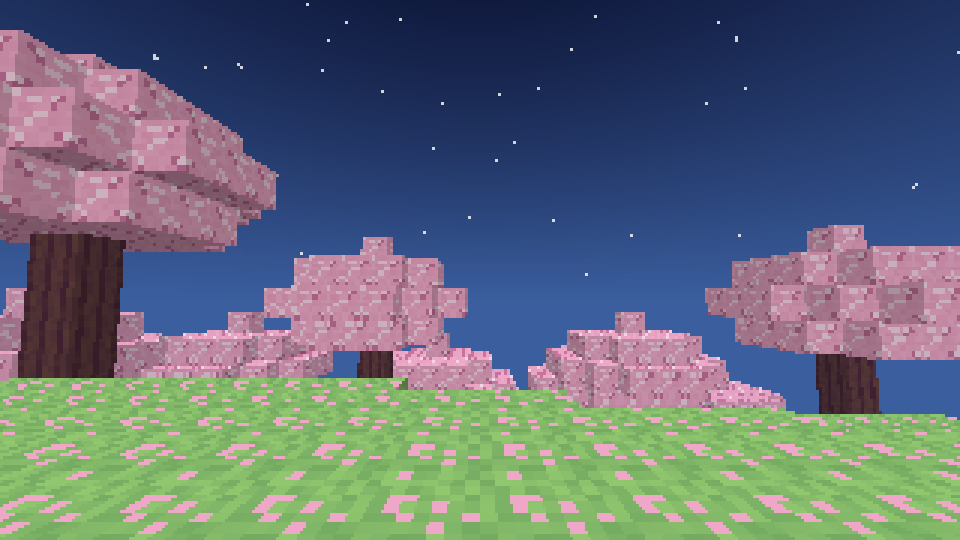
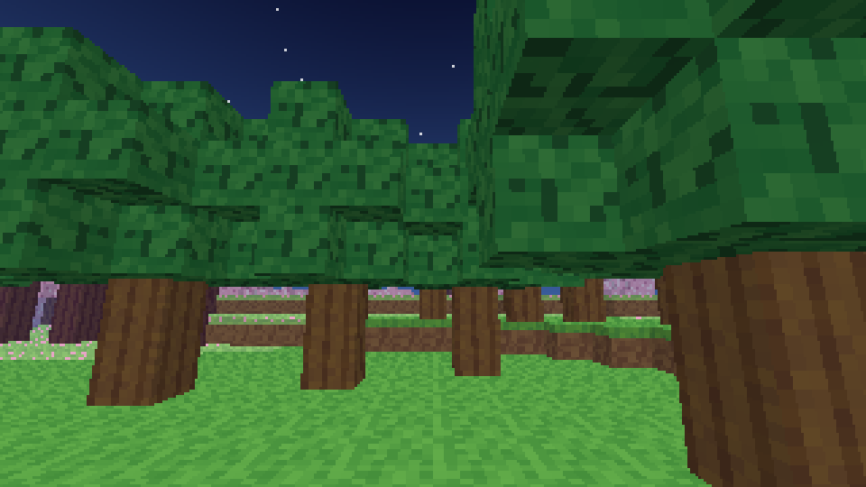
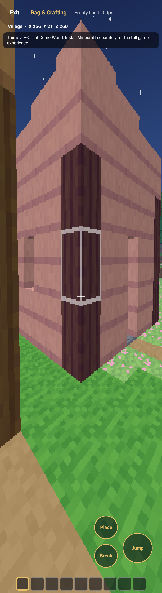
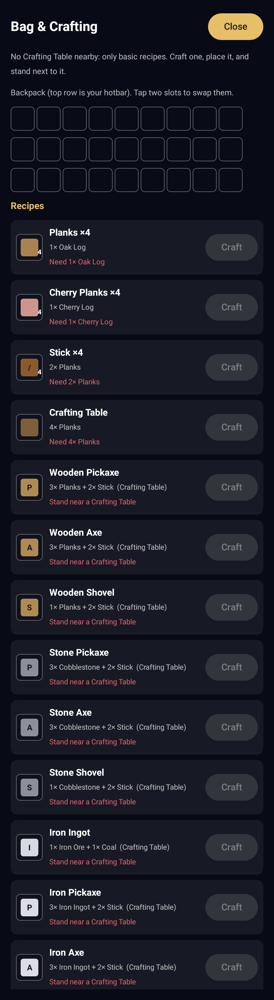
Demo pictures are rendered by the same game code the app runs. The Play Demo World button is on the app's Home screen.
THE SERVER
VSMP is the Minecraft survival multiplayer server this launcher is built for. V-Client keeps you on the right version, with the V-Client mod installed, and keeps you up to date with what is happening on the server.
neuron.zeroxhost.space:19145 —